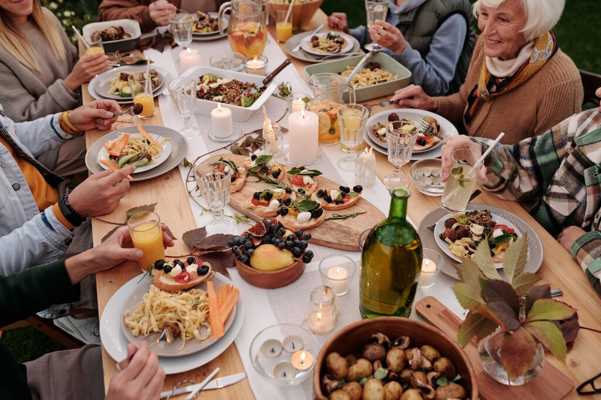

Solidarity meal
Solidarity meal: Once a week at noon or in evening.The principle of this moment is to have a time to prepare a meal all together.
On MIDIS, the participatory cooking starts at 9.30 am.
To meet for lunch, it starts at 12:15.
In the evenings, the participatory cooking starts at 6pm.
Dinner is served from 7.45pm onwards.
Menu
- Lunch : Tuesday April 4 : "Pancake meal"
- Dinner: Thursday April 6 : "Lebanese meal,Tabbouleh, falafe, orange flower cream "
- Lunch : Wednesday April 12 : "gratin dauphinois, tart tatin"
- Dinner: Friday April 14 : "pumpkin soup,quiche lorraine,fruit salad"
Events
- Spring cleaning : 3rd week of May
- Repairs week : 1st week of each month
- Night cooking day : 2nd Friday of each month
- Let's get together: Games, Dinner, Picnic : May